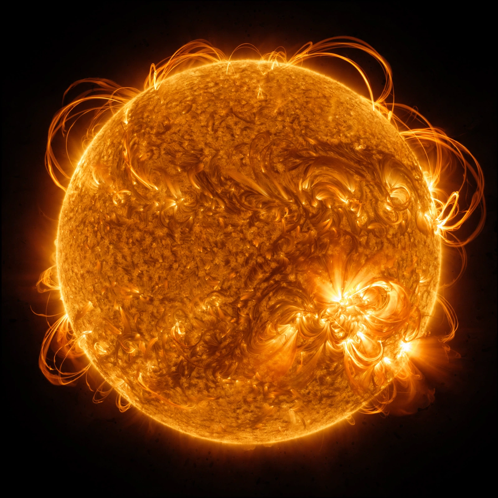

| Solar Dynamics Observatory | |
| Operator | NASA |
|---|---|
| Launch | 11 February 2010, Atlas V from Cape Canaveral |
| Orbit | Inclined geosynchronous orbit |
| Program | Living With a Star |
| Instruments | AIA, HMI, EVE |
The Solar Dynamics Observatory (SDO) is a NASA mission launched in February 2010 as the flagship of the Living With a Star program. It observes the Sun nearly continuously from an inclined geosynchronous orbit, studying the solar atmosphere on small scales and measuring how the Sun's magnetic activity drives space weather.
The Atmospheric Imaging Assembly (AIA) takes full-disk images of the solar corona and chromosphere in ten ultraviolet and extreme-ultraviolet wavelengths every 12 seconds, at up to 0.6 arcsecond resolution. The Helioseismic and Magnetic Imager (HMI) maps the surface magnetic field and uses helioseismology to probe flows beneath the photosphere. The Extreme Ultraviolet Variability Experiment (EVE) measures the Sun's EUV irradiance, which heats and expands Earth's upper atmosphere.
SDO returns about 1.4 terabytes of data per day — often described as an image the size of a movie file every few seconds — and its imagery has become the standard public view of the Sun. Its observations have clarified the structure of coronal loops, the triggering of flares and coronal mass ejections, the transport of magnetic flux from the interior, and the dynamics of erupting prominences. Originally planned for five years, the mission has been repeatedly extended.